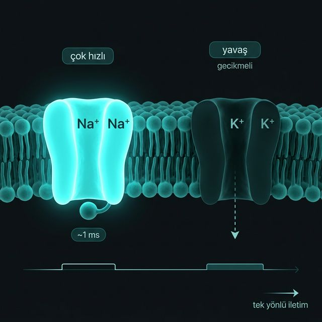

Hızlı yükseliş, yavaş iniş ve o meşhur 'aşma' etkisi...
\(-55\) mV'da anında açılır. Ancak açıldıktan ~1 ms sonra, voltajdan bağımsız çalışan bir inaktivasyon kapısı kanalı içeriden tıkar. Depolarizasyon bu kanalın işidir.
Uyarıldığı an açılmaz, tepkisi gecikmelidir. Na⁺ kanalı kapanırken K⁺ tam kapasiteye ulaşır. Kapanması da yavaş olduğu için potansiyeli \(-80\) mV'a kadar sürükler (Repolarizasyon).
Sinyal ilerlerken arkasındaki Na⁺ kanalları 'inaktive' (tıkalı) durumdadır. Bu 1-2 ms'lik süre sinyalin geriye dönmesini imkansız kılar, akışı tek yöne zorlar.
Na⁺ kanalı hızlı ve kendini kapatan bir tetik; K⁺ kanalı yavaş ve sürekli sızan bir fren. İkisinin senkronu aksiyon potansiyelini oluşturur.
